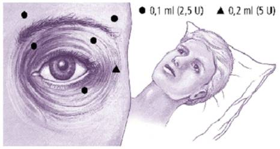
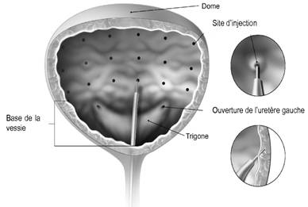

RÉSUMÉ DES CARACTÉRISTIQUES DU PRODUIT
ANSM - Mis à jour le : 27/11/2014
BOTOX 50 UNITES ALLERGAN, poudre pour solution injectable
2. COMPOSITION QUALITATIVE ET QUANTITATIVE
Toxine botulinique de type A*1 ................................................................................... 50 unités*2 ALLERGAN
Pour un flacon.
*1(de Clostridium botulinum)
*2Une unité correspond à la dose létale 50 (DL50) du produit reconstitué et injecté par voie intrapéritonéale chez la souris.
Pour la liste complète des excipients, voir rubrique 6.1.
Poudre pour solution injectable.
4.1. Indications thérapeutiques
Dysfonctions vésicales
Traitement de l’hyperactivité vésicale idiopathique associée à des symptômes incluant:
· 3 épisodes d’incontinence urinaire avec urgenturie sur 3 jours,
et
· fréquence urinaire définie par un nombre de mictions ≥ 8 par jour et ne répondant pas de manière adéquate aux anticholinergiques (après 3 mois de traitement) ou intolérants au traitement anticholinergique et ne répondant pas à une kinésithérapie bien conduite.
Traitement de l’hyperactivité détrusorienne neurologique conduisant à une incontinence urinaire non contrôlée par un traitement anticholinergique chez :
· les patients blessés médullaires,
· les patients atteints de sclérose en plaques et utilisant l’autosondage comme mode mictionnel.
Adultes et enfants de plus de 12 ans
· Troubles de l'oculomotricité : strabisme, paralysies oculomotrices récentes, myopathie thyroïdienne récente.
· Blépharospasme.
· Spasme hémifacial.
· Torticolis spasmodique.
· Hyperhidrose axillaire sévère ayant résisté aux traitements locaux et entraînant un retentissement psychologique et social important.
Adultes et enfants de 2 ans et plus
· Traitement symptomatique local de la spasticité (hyperactivité musculaire) des membres supérieurs et/ou inférieurs.
4.2. Posologie et mode d'administration
BOTOX doit être administré dans le cadre d'une prise en charge globale multidisciplinaire par des médecins spécialistes ayant déjà une bonne expérience de l'utilisation de la toxine dans ces indications et avec un plateau technique adapté.
Les doses recommandées de BOTOX ne sont pas interchangeables avec les autres préparations de toxines botuliniques. Elles sont exprimées en unités Allergan (voir rubrique 4.4).
En cas d'antécédents d'atteinte neurogène de la face et chez les personnes âgées de plus de 70 ans, il est recommandé de réduire la posologie lors de la première séance d'injections (voir rubrique 4.4).
Intervalle minimum entre 2 séances d'injections:
La présence d'anticorps dirigés contre la toxine botulinique de type A peut réduire l'efficacité du traitement par BOTOX. En conséquence, par mesure de prudence, un intervalle minimum entre 2 séances d'injections doit être respecté:
· Pour l'indication dans l'hyperhidrose axillaire sévère ayant résisté aux traitements locaux: 4 mois.
· Pour l'indication traitement symptomatique local de la spasticité (hyperactivité musculaire) des membres supérieurs et/ou inférieurs chez l'adulte et l'enfant de 2 ans et plus: 3 mois.
· Pour les autres indications chez l'adulte et l'enfant de plus de 12 ans : 2 mois.
· Pour l’indication dans l’hyperactivité vésicale chez l’adulte : lorsque les bénéfices de l’injection précédente s’estompent (en général, 6 mois) et en respectant un intervalle minimum de 3 mois.
· Pour l’indication dans l’hyperactivité détrusorienne neurologique chez l’adulte : lorsque les bénéfices de l’injection précédente s’estompent (en général, 9 mois) et en respectant un intervalle minimum de 3 mois.
Technique d'injection
Voie intramusculaire stricte ou intradermique stricte suivant l'indication.
Après désinfection de la peau, la dose de BOTOX diluée est injectée à l'aide d'une aiguille stérile de calibre adapté au muscle à injecter.
Le guidage électromyographique peut augmenter la précision de l'injection: l'activité électrique enregistrée par la pointe de l'aiguille d'injection est utilisée comme guide pour le positionnement dans le muscle cible.
Ce guidage est impératif dans le traitement du strabisme.
Chez l'enfant, les injections de toxine botulinique doivent être administrées par des médecins spécialisés et ayant une forte expérience de ce traitement chez l'enfant. Ce traitement médicamenteux doit être inclus dans une prise en charge globale multidisciplinaire (associant neurologue, pédiatre, médecin de médecine physique et de réadaptation, chirurgien orthopédiste...) et associé à une prise en charge réadaptative.
Chez les patients adultes atteints d’hyperactivité vésicale, ce traitement médicamenteux par injection dans le détrusor doit être inclus dans une prise en charge globale multidisciplinaire associant médecin urologue et gynécologue-obstétricien ayant reçu une formation spécifique d’utilisation de la toxine botulinique dans cette indication sous la supervision d’un urologue. Les injections de toxine botulinique doivent être réalisées sous visualisation cystoscopique, via un cystoscope flexible ou rigide, en évitant le trigone.
Chez les patients adultes atteints d'hyperactivité détrusorienne neurologique, ce traitement médicamenteux par injection dans le détrusor doit être inclus dans une prise en charge globale multidisciplinaire associant médecin urologue et médecin de médecine physique et de réadaptation ayant reçu une formation spécifique d'utilisation de la toxine botulinique dans cette indication sous la supervision d'un urologue. Les injections de toxine botulinique doivent être réalisées sous visualisation cystoscopique, via un cystoscope flexible ou rigide, en évitant le trigone.
Après reconstitution, BOTOX ne doit être utilisé que pour une seule séance d'injection pour un seul patient.
BLEPHAROSPASME
1) Préparation du produit
Préparer une solution contenant 2,5 unités pour 0,1 ml (voir rubrique 6.6).
2) Posologie et mode d'administration
Utiliser une aiguille de 27 ou 30 gauges.
Le guidage électromyographique n'est pas nécessaire.
La dose initiale recommandée pour le traitement du blépharospasme bilatéral est de 17,5 unités par œil (0,70 ml) avec la répartition suivante:
· 7,5 unités (0,30 ml) répartis entre trois sites, (2,5 unités par site): partie interne et externe du muscle orbiculaire de la paupière supérieure et partie externe prétarsienne du muscle orbiculaire de la paupière inférieure.
· 5 unités (0,20 ml) dans l'arcade sourcilière répartis en 2 sites (2,5 unités par site).
· 5 unités (0,20 ml) dans la zone faciale supérieure.
La dose initiale ne doit pas dépasser 25 unités (1 ml) par orbiculaire.
A TITRE INDICATIF, CONSULTER LE SCHEMA CI-DESSOUS

En général, l'effet des injections apparaît dans les trois jours et atteint un pic une ou deux semaines après le traitement. Chaque traitement dure environ trois mois, à la suite desquels la procédure peut être répétée indéfiniment. Lors des réinjections, la dose peut être augmentée jusqu'à deux fois si le résultat du traitement initial est considéré insuffisant (effet durant moins de deux mois).
La dose totale ne doit pas dépasser 100 unités (4 ml) tous les 3 mois.
Normalement, un traitement plus fréquent que tous les 3 mois n'apporte aucun bénéfice supplémentaire.
SPASME HEMIFACIAL
Les doses et la technique d'injection sont identiques à celles décrites pour le traitement du blépharospasme unilatéral.
Un contrôle électromyographique peut être nécessaire pour identifier les petits muscles circulaires.
TORTICOLIS SPASMODIQUE
1) Préparation du produit
Préparer une solution contenant 10 unités pour 0,1 ml (voir rubrique 6.6).
2) Posologie et mode d'administration
Utiliser une aiguille de 25, 27 ou 30 gauges.
En cas de difficulté pour isoler les muscles à injecter, les injections doivent être faites avec assistance électromyographique.
Les doses initiales recommandées sont les suivantes:
· sterno-cleido-mastoïdien: 40 à 75 unités (0,40 à 0,75 ml), splénius: 75 unités - 50 à 150 unités (0,75 ml) et trapèze: 75 unités - 50 à 100 unités (0,75 ml).
Pour chaque muscle, la dose sera répartie en 3 sites.
· élévateur de l'omoplate: 50 unités (0,5 ml) répartis en 2 sites;
· scalène: 25 unités (0,25 ml).
Ne pas administrer plus de 50 unités (0,50 ml) par site.
Afin de minimiser le risque de dysphagie, le sterno-cleido-mastoïdien ne doit pas être injecté de façon bilatérale, ni recevoir plus de 100 unités (1 ml) par séance.
La dose totale ne doit jamais excéder 200 unités (2 ml) lors de la première séance.
Des ajustements pourront être faits lors des séances suivantes en fonction de la réponse initiale, sans dépasser une dose totale de 300 unités (3 ml) par séance.
L'amélioration clinique apparaît généralement au cours des deux semaines suivant l'injection. Le bénéfice clinique apparaît généralement vers la sixième semaine après l'injection. Une nouvelle injection peut être faite lorsque l'effet clinique de l'injection précédente a diminué.
La durée de l'effet bénéfique rapportée dans les essais cliniques a montré des variations importantes (de 2 à 33 semaines), avec une durée plus souvent rencontrée de 3 mois, le tout dépendant des symptômes et des réponses individuelles des patients. Le schéma posologique doit donc être adapté aux besoins de chaque patient.
Les séances d'injection doivent être répétées en fonction de la durée de l'effet clinique. Elles seront toujours espacées d'au moins 2 mois.
STRABISME
Préparer une solution contenant 2,5 unités pour 0,1 ml (voir rubrique 6.6).
Utiliser une aiguille de 27 gauges longue de 40 mm.
BOTOX est destiné à être injecté dans les muscles extra-oculaires en utilisant impérativement un guidage électromyographique (voir Technique d'injection).
Afin de préparer l'œil à l'injection de BOTOX, il est recommandé d'administrer quelques minutes avant l'injection, quelques gouttes d'anesthésique local et de décongestionnant oculaire.
Doses initiales: utiliser les plus petites doses pour le traitement de faibles déviations et les doses plus fortes pour les déviations importantes.
Pour les muscles verticaux et pour le strabisme horizontal de moins de 20 dioptries prismatiques: 1,25 unités à 2,5 unités (de 0,05 ml à 0,10 ml) quel que soit le muscle.
Pour le strabisme horizontal de 20 à 50 dioptries prismatiques: 2,5 unités à 5 unités (de 0,10 ml à 0,20 ml) quel que soit le muscle.
Pour une paralysie persistante du nerf moteur externe d'un mois ou plus: 1,25 unités à 2,5 unités (0,05 ml à 0,10 ml) dans le droit interne.
Les doses initiales de BOTOX dilué provoquent habituellement la paralysie des muscles injectés un à deux jours après l'injection: l'intensité de cette paralysie augmente pendant la première semaine. La paralysie dure 2 à 6 semaines et se résorbe progressivement pendant une période à peu près équivalente. Les sur-corrections durant plus de 6 mois sont rares.
La moitié des patients environ aura besoin de doses supplémentaires, du fait d'une paralysie insuffisante du muscle après la dose initiale, ou à cause de facteurs mécaniques tels que d'importantes déviations ou restrictions, ou encore à cause du manque de fusion motrice binoculaire pour stabiliser l'alignement.
ADULTE: TRAITEMENT SYMPTOMATIQUE LOCAL DE LA SPASTICITE (HYPERACTIVITE MUSCULAIRE) DES MEMBRES SUPERIEURS ET/OU INFERIEURS
1) Préparation du produit
Préparer une solution dont la dilution est adaptée à la posologie (voir rubrique 6.6).
2) Posologie et mode d'administration
Posologie
La posologie exacte et le nombre de sites d'injection doivent être adaptés à chaque individu d'après la taille, le nombre et l'emplacement des muscles impliqués, la sévérité de la spasticité, la présence d'une faiblesse musculaire localisée et la réponse du patient au traitement précédent.
Posologies moyennes par muscle injecté:
|
Muscle |
Dose totale; Nombre de sites |
|
|
Biceps brachial (Biceps brachii) |
100 à 200 U; jusqu'à 4 sites |
|
|
Fléchisseur commun profond des doigts (Flexor digitorum profundus) |
15 à 50 U; 1 à 2 sites |
|
|
Fléchisseur commun superficiel des doigts (Flexor digitorum sublimis) |
15 à 50 U; 1 à 2 sites |
|
|
Grand palmaire (Flexor carpi radialis) |
15 à 60 U; 1 à 2 sites |
|
|
Cubital antérieur (Flexor carpi ulnaris) |
10 à 50 U; 1 à 2 sites |
|
|
Adducteur du pouce (Adductor Pollicis) |
20 U; 1 à 2 sites |
|
|
Long fléchisseur propre du pouce (Flexor Pollicis Longus) |
20 U; 1 à 2 sites |
|
|
Tibial postérieur (Posterior tibialis) |
50 à 150 U; 2 à 4 sites |
|
|
Tibial antérieur (Anterior tibialis) |
70 à 100 U; 2 sites |
|
|
Soléaire (Soleus) |
50 à 200 U; 2 à 4 sites |
|
|
Long fléchisseur commun et court fléchisseur des orteils (Flexor digitorum longus/brevis) |
50 à 150 U; 2 à 4 sites |
|
|
Gastrocnémien chefs médial et latéral (Gastrocnemius medial/lateral) |
50 à 200 U; 2 à 4 sites |
|
|
Long extenseur de l'hallux (extensor hallucis longus) |
50 à 100 U; 2 à 4 sites |
|
|
Adducteurs (adductor) |
50 à 200 U; 2 à 4 sites |
|
|
Ischiojambiers et sartorius (biceps femoris, semitendinosus, semimembranosus, sartorius) |
50 à 200 U; 2 à 4 sites |
Dans les essais cliniques, la dose totale administrée par séance d'injection n'a pas dépassé 360 U. La dose totale doit être répartie entre les différents muscles sélectionnés.
En général, la dose totale maximale est fixée à 6 U/kg.
Mode d'administration
Utiliser une aiguille de 25, 27 ou 30 gauges pour les muscles superficiels et une aiguille plus longue pour les muscles plus profonds.
Afin d'isoler les muscles concernés, le recours à un guidage électromyographique ou à des techniques de stimulation nerveuse peut être utile. Le choix de plusieurs sites d'injection par muscle permet de répartir plus uniformément BOTOX et s'avère particulièrement utile pour les gros muscles.
L'amélioration clinique de l'hypertonie musculaire s'observe généralement au cours des deux semaines qui suivent la séance d'injection. L'effet clinique maximal apparaît généralement quatre à six semaines après le traitement. Les séances d'injection pourront être répétées si besoin, mais seront toujours espacées d'au moins 3 mois.
Dans les essais cliniques, l'intervalle entre 2 séances d'injections était compris entre 12 et 16 semaines.
Lors d'une nouvelle séance d'injection, l'intensité et le type de spasticité musculaire peuvent conduire à modifier la dose de BOTOX administrée et le choix des muscles à injecter.
ENFANT DE 2 ANS ET PLUS: TRAITEMENT SYMPTOMATIQUE LOCAL DE LA SPASTICITE (HYPERACTIVITE MUSCULAIRE) DES MEMBRES SUPERIEURS ET/OU INFERIEURS
1) Préparation du produit
Préparer une solution dont la dilution est adaptée à la posologie (voir rubrique 6.6).
2) Posologie et mode d'administration
Après reconstitution, BOTOX est injecté avec une aiguille stérile de 27 ou 30 gauges et de longueur adaptée aux muscles ciblés. Pour localiser les muscles concernés, le recours à un guidage électromyographique ou à des techniques de stimulation nerveuse peut être utile.
La posologie exacte et le nombre de sites d'injection doivent être adaptés à chaque individu d'après la taille, le nombre et l'emplacement des muscles impliqués, la sévérité de la spasticité, la présence d'une faiblesse musculaire locale et la réponse du patient au traitement précédent. Dans les essais cliniques, des doses par muscle comprises entre 0,5 et 2,0 unités/kg de masse corporelle pour le membre supérieur et de 2,0 à 4,0 unités/kg de masse corporelle pour le membre inférieur ont été administrées à chaque séance de traitement.
Ne pas dépasser la dose initiale recommandée à l'initiation du traitement.
Dans le traitement du pied en équin, deux injections sont faites dans chacun des chefs médial (interne) et latéral (externe) du muscle gastrocnémius (jumeau) atteint.
En cas d'hémiplégie, la dose initiale recommandée est de 4 unités par Kg injectée dans le membre concerné.
En cas de diplégie, la dose initiale recommandée est de 6 unités par Kg, à répartir entre les deux membres concernés.
Il conviendra de strictement respecter la dose initiale recommandée chez les enfants, en particulier:
· présentant des comorbidités associées notamment celles avec troubles de déglutition ou respiratoire préexistant,
· dont les muscles à traiter sont peu développés,
· qui nécessitent une injection multisite,
· qui bénéficient d'injections sous anesthésie générale.
A titre indicatif, le tableau ci-dessous fournit des directives pour l'injection de BOTOX dans le traitement de la spasticité chez les enfants âgés de 2 ans et plus;
Dans tous les cas, lors du choix de la dose, une évaluation individuelle du rapport bénéfice/risque devra être envisagée, afin de réduire le risque des effets indésirables notamment le risque de diffusion de la toxine à distance du site d'administration (voir rubriques 4.4 et 4.8). En fonction de la réponse au traitement précédent, la dose peut être augmentée au dessus de la dose initiale recommandée avec une extrême précaution, sans toutefois dépasser la dose maximale par session indiquée ci-dessous. La dose et le plan de traitement devront être réévalués en cas de survenue d'effets indésirables.
|
Enfants âgés de 2 ans et plus |
Dose par muscle (U/kg) |
Dose maximale par session |
|
|
Muscles du membre supérieur: |
|
|
|
|
Biceps brachii, brachialis, brachioradialis |
1-2 |
|
|
|
Pronator quadratus |
0,5-1 |
|
|
|
Pronator teres |
1-2 |
15 U/kg |
|
|
Flexor carpi ulnaris/radialis |
1-2 |
ou 350 U |
|
|
Flexor pollicis longus/brevis/opponens |
0,5-1 |
ou 50 U par site |
|
|
Adductor pollicis |
0,5-1 |
|
|
|
Flexor digitorum profundis/superficialis |
1-2 |
|
|
|
Muscles du membre inférieur: |
|
|
|
|
Adductor longus/brevis/magnus |
2-4 |
|
|
|
Biceps femoris, semitendinosus, semimembranosus, sartorius |
2-4 |
|
|
|
Gastrocnemius |
2-4 |
|
|
|
Soleus |
2-3 |
|
L'amélioration clinique survient généralement au cours des deux semaines qui suivent la séance d'injections. Les séances d'injections doivent être répétées en fonction de la durée de l'effet clinique.
Elles seront toujours espacées d'au moins 3 mois. Une posologie adaptée devrait permettre d'obtenir un intervalle d'au moins 6 mois entre deux séances.
En cas d'échec après une première séance, c'est-à-dire en l'absence, un mois après la séance, d'amélioration fonctionnelle significative par rapport au bilan initial, il y a lieu de:
· vérifier cliniquement, et au mieux par un examen électromyographique en milieu spécialisé, l'action de la toxine sur le muscle injecté,
· analyser les causes de l'échec:
o mauvaise sélection des muscles injectés (évaluer le rôle du soléaire),
o dose insuffisante,
o technique d'injection inadaptée,
o apparition d'une rétraction fixée,
o muscles antagonistes trop faibles,
· réévaluer la pertinence du traitement par la toxine botulinique de type A (voir rubrique 4.4),
· en l'absence d'effet indésirable secondaire lors de la première injection, pratiquer une deuxième injection:
o ajustée aux données de l'analyse de l'échec,
o en utilisant un guidage électromyographique,
o en respectant l'intervalle de 3 mois entre la première et la deuxième injection.
Après échec d'une seconde séance d'injections, il n'y a pas lieu de poursuivre le traitement par la toxine botulinique de type A.
HYPERHIDROSE AXILLAIRE
1) Préparation du produit
Préparer une solution contenant 100 unités pour 4 ml ou 2,5 unités pour 0,1 ml (voir rubrique 6.6).
2) Posologie et mode d'administration
Utiliser une aiguille de 30 gauges.
Injecter 50 unités de Botox en injection intradermique stricte, réparties uniformément en plusieurs sites de la zone d'hyperhidrose de chaque aisselle distants les uns des autres d'environ 1 à 2 cm. La zone d'hyperhidrose peut être déterminée en utilisant des méthodes standardisées, comme la méthode de Minor (test à l'iode). Des doses différentes de 50 U par aisselle n'ont pas été étudiées et ne peuvent donc pas être recommandées.
L'amélioration clinique survient en général au cours de la première semaine suivant la séance d'injection.
La réponse au traitement est supérieure à 4 mois et peut durer 1 an ou plus. Des injections supplémentaires peuvent être faites lorsque l'effet clinique des injections précédentes diminue, mais il est nécessaire de respecter un délai minimum de 4 mois entre 2 séances d'injections.
ADULTES : DYSFONCTIONS VESICALES
1) Préparation du produit
Préparer une solution dont la dilution est adaptée à la posologie (voir rubrique 6.6).
2) Posologie et mode d'administration
Au moment du traitement, les patients ne doivent pas présenter d’infection urinaire (voir rubrique 4.3).
Un examen cyto-bactériologique des urines doit être systématiquement réalisé 5 jours avant le traitement. En cas de stérilité, une antibiothérapie prophylactique doit être administrée au patient 1 à 3 jours avant le traitement, le jour du traitement et 1 à 3 jours après le traitement. En cas de colonisation bactérienne asymptomatique, une antibiothérapie adaptée doit être initiée au moins 2 jours avant, poursuivie le jour du traitement et au moins 2 jours après.
Une interruption du traitement par antiagrégant plaquettaire est recommandée au moins 3 jours avant la procédure d’injection. Les patients sous anticoagulants doivent être pris en charge de façon appropriée pour réduire le risque de saignement.
ADULTES : HYPERACTIVITE VESICALE
Les patients doivent être informés que des sondages intermittents propres pour vider leur vessie pourront être nécessaires. Ils doivent eux-mêmes ou leur entourage être capables de les réaliser (voir rubrique 4.4).
Une instillation intra-vésicale d’une solution anesthésique diluée avec ou sans sédation associée peut être pratiquée avant l’injection selon les pratiques locales. En cas d’instillation d’anesthésique local, la vessie doit être drainée et rincée par une solution de chlorure de sodium stérile avant de poursuivre la procédure d’injection.
Débuter le traitement avec une dose de 50 unités de BOTOX®. Si la réponse est insuffisante, la dose étudiée de 100 unités de BOTOX pourrait être utilisée lors des injections suivantes.
La solution reconstituée de BOTOX® (voir rubrique 6.6) est injectée dans le muscle détrusorien via un cystoscope flexible ou rigide, en évitant le trigone. La vessie doit être instillée avec une quantité suffisante de solution de chlorure de sodium pour permettre une visualisation adéquate des injections, tout en évitant une distension excessive.
L’aiguille doit être remplie avec approximativement 1 ml de solution reconstituée de BOTOX (selon la longueur de l’aiguille) avant le début des injections afin de vider l’air du volume mort.
L’aiguille doit être introduite environ 2 mm à l’intérieur du détrusor, et les injections de 0,5 ml doivent être réparties en 20 sites espacés d’environ 1 cm (voir schéma ci-dessous). La dernière injection doit être réalisée avec 1 ml de solution de chlorure de sodium stérile afin de s’assurer que la dose totale aura été injectée. Une fois les injections réalisées, la solution de chlorure de sodium utilisée pour la visualisation des parois de la vessie ne doit pas être drainée afin que le patient puisse démontrer sa capacité à uriner avant de quitter l’établissement de santé. Le patient doit rester en observation au moins 30 minutes après la séance d’injection et jusqu’au retour à une miction spontanée.
L’amélioration clinique est généralement observée dans les 2 premières semaines suivant l’injection. Une nouvelle injection peut être considérée quand le bénéfice clinique de la précédente s’estompe (durée moyenne de l’effet observée dans les études de phase 3 avec 100 unités de BOTOX®: 166 jours (environ 24 semaines)), et en respectant un intervalle minimum de 3 mois.
ADULTES : HYPERACTIVITE DETRUSORIENNE NEUROLOGIQUE
Les patients doivent être informés que des sondages intermittents propres pour vider leur vessie seront nécessaires. Ils doivent eux-mêmes ou leur entourage être capables de les réaliser (voir rubrique 4.4).
Une instillation intravésicale d’une solution anesthésique diluée avec ou sans sédation associée, ou une anesthésie générale peut être pratiquée avant l’injection selon les pratiques locales. En cas d’instillation d’anesthésique local, la vessie doit être drainée et rincée par une solution de chlorure de sodium stérile avant de poursuivre la procédure d’injection.
La dose recommandée est de 200 unités de BOTOX réparties en 30 injections d’un volume de 1 ml (~ 6,7 unités) dans le détrusor.
L’injection est réalisée sous visualisation cystoscopique, via un cystoscope flexible ou rigide, en évitant le trigone. La vessie doit être instillée avec une quantité suffisante de solution de chlorure de sodium pour permettre une visualisation adéquate des injections, tout en évitant une distension excessive.
L’aiguille doit être remplie avec approximativement 1 ml de solution reconstituée de BOTOX (selon la longueur de l’aiguille) avant le début des injections afin de vider l’air du volume mort.
L’aiguille doit être introduite environ 2 mm à l’intérieur du détrusor, et les injections de 1 ml doivent être réparties en 30 sites espacés d’environ 1 cm (voir schéma ci-dessous). La dernière injection doit être faite avec 1 ml de solution de chlorure de sodium stérile afin de s’assurer que la dose totale aura été injectée. Une fois les injections réalisées, la solution de chlorure de sodium utilisée pour la visualisation des parois de la vessie doit être drainée. Le patient doit rester en observation au moins 30 minutes après la séance d’injection.
L’amélioration clinique est généralement observée dans les 2 premières semaines suivant l’injection. Une nouvelle injection peut être considérée quand le bénéfice clinique de la précédente s’estompe, environ 9 mois après (durée moyenne de l’effet observée dans les études de phase 3 : 256 à 295 jours avec 200 Unités Allergan de BOTOX), et en respectant un intervalle minimum de 3 mois.

La toxine botulinique est contre-indiquée dans les situations suivantes :
· hypersensibilité à la toxine botulinique ou aux excipients.
· myasthénie,
· allaitement (voir rubrique 4.6).
Dans le traitement des patients atteints de dysfonctions vésicales associées à une incontinence urinaire, BOTOX est également contre-indiqué :
· chez les patients présentant une infection de l’appareil urinaire au moment du traitement,
· chez les patients présentant une rétention urinaire aigüe ou chronique chez lesquels le sondage intermittent est contre-indiqué ou refusé par le patient.
L'utilisation de la toxine botulinique est déconseillée pendant la grossesse et en association avec les aminosides.
4.4. Mises en garde spéciales et précautions d'emploi
|
LA CONCENTRATION DE LA SOLUTION RECONSTITUEE DE BOTOX EST EXPRIMEE EN UNITES ALLERGAN. |
|
ETANT DONNE L'ABSENCE D'HARMONISATION DES SYSTEMES D'UNITES POUR LES DIFFERENTES TOXINES BOTULINIQUES COMMERCIALISEES, IL EST NECESSAIRE DE FAIRE PREUVE D'UNE EXTREME PRUDENCE AU CAS OU LE PASSAGE D'UNE TOXINE BOTULINIQUE D'UN LABORATOIRE PHARMACEUTIQUE A LA TOXINE BOTULINIQUE D'UN AUTRE LABORATOIRE PHARMACEUTIQUE S'AVERERAIT NECESSAIRE. |
RECOMMANDATIONS POUR LA RECONSTITUTION DU PRODUIT
La préparation du produit doit être réalisée dans un local approprié et par du personnel expérimenté (voir rubrique 6.6).
RECOMMANDATIONS EN CAS D'INCIDENT LORS DE LA MANIPULATION DE LA TOXINE
En cas d'incident lors de la manipulation de la toxine, des mesures appropriées doivent être prises (voir rubrique 6.6).
L'INJECTION DOIT ETRE REALISEE PAR UN MEDECIN SPECIALISTE AYANT UNE BONNE EXPERIENCE DE L'UTILISATION DE LA TOXINE BOTULINIQUE DANS LES INDICATIONS PREVUES PAR L'AUTORISATION DE MISE SUR LE MARCHE.
Il est recommandé d'utiliser des doses inférieures aux doses indiquées pour le traitement des patients de plus de 70 ans.
L'existence d'antécédents d'atteinte neurogène de la face (paralysie faciale, polyradiculonévrite...) nécessite lors de la première injection, d'utiliser des doses égales au quart de la dose recommandée.
Possibilité de formation d'anticorps dirigés contre la toxine botulinique et donc de résistance au traitement (voir rubrique 4.2).
Les patients souffrant de blépharospasme peuvent avoir été sédentaires pendant un très long moment. En conséquence, lors d'un traitement par la toxine botulinique, il est nécessaire de leur conseiller une reprise d'activité progressive.
Des effets indésirables, liés à la diffusion de la toxine à distance du site d'administration, ont été rapportés (voir rubrique 4.8), ayant conduit à de très rares cas de décès suite parfois à une dysphagie, une pneumopathie d'inhalation et/ou chez des patients ayant une asthénie significative.
Les patients traités à dose thérapeutique peuvent présenter une faiblesse musculaire excessive. Les patients souffrant de troubles neurologiques incluant des difficultés de déglutition sont plus à risque de présenter ces effets. Chez ces patients, le traitement devra être utilisé sous le contrôle d'un médecin spécialiste et uniquement si le bénéfice du traitement l'emporte sur le risque.
Les patients ayant des antécédents de dysphagie et de pneumopathie d'inhalation doivent être traités avec la plus grande précaution.
Les patients et leur entourage doivent être avertis de la nécessité d'une prise en charge médicale immédiate en cas de troubles de la déglutition, de troubles du langage ou de troubles respiratoires.
La diminution du clignement due à l'injection de la toxine botulinique dans le muscle orbiculaire peut conduire à une exposition prolongée de la cornée, à une lésion épithéliale persistante et à une ulcération de la cornée en particulier chez les patients ayant présenté une paralysie faciale. Dans ce cas, des mesures préventives et curatives doivent être prises.
Dans la déformation dynamique du pied en équin chez les enfants présentant une infirmité motrice cérébrale, une évaluation fonctionnelle initiale précise doit être effectuée en milieu spécialisé. Elle permet:
· d'évaluer la pertinence de l'indication:
o spasticité prédominante,
o absence de faiblesse musculaire parfois masquée par l'hypertonie. Cette faiblesse pourrait être aggravée par une injection de toxine botulinique,
o absence de rétraction fixée importante ou de cicatrice post-chirurgicale rendant inutile une injection de toxine botulinique,
· de déterminer les différentes composantes du traitement (kinésithérapie, port d'attelles...),
· d'adapter le traitement en fonction de l'évolution du résultat de l'évaluation.
Dans le traitement symptomatique local de la spasticité (hyperactivité musculaire) des membres supérieurs et/ou inférieurs, BOTOX n'a été étudié qu'en association avec les traitements habituels, et ne vise pas à les remplacer. Il est peu probable que BOTOX puisse améliorer la mobilité d'une articulation bloquée par une contracture fixée.
Dans le traitement des patients atteints de dysfonctions vésicales :
Les précautions médicales d’usage doivent être mises en œuvre lors de la cystoscopie.
Chez les patients atteints d’hyperactivité vésicale :
Le volume résiduel d’urine post-mictionnel doit être évalué pendant les 2 semaines suivant le traitement puis de façon périodique selon avis médical jusqu’à 12 semaines. Les patients doivent être avertis de contacter leur médecin s’ils présentent des difficultés mictionnelles car les sondages intermittents seront nécessaires.
Chez les patients atteints d’hyperactivité détrusorienne neurologique :
Le traitement de l’hyperactivité détrusorienne neurologique par injection intradétrusorienne de BOTOX peut conduire à une rétention urinaire et nécessiter que le patient utilise un sondage intermittent propre pour vider la vessie.
Par conséquent, les patients doivent être informés et doivent accepter que des sondages intermittents propres pour vider leur vessie seront nécessaires. Ils doivent, eux-mêmes ou leur entourage, être capables de les réaliser.
Chez les patients conservant des mictions spontanées au moins partielles, le volume résiduel d’urine post-mictionnel doit être évalué pendant les 2 semaines suivant le traitement puis de façon périodique selon avis médical jusqu’à 12 semaines. Les patients doivent être avertis de contacter leur médecin s’ils présentent des difficultés mictionnelles car les sondages intermittents seront nécessaires.
Une hyper-réflexie autonome associée à la procédure de cystoscopie et d’injection dans le détrusor peut survenir chez les patients traités pour hyperactivité détrusorienne neurologique. Une prise en charge médicale appropriée et rapide peut alors être nécessaire.
4.5. Interactions avec d'autres médicaments et autres formes d'interactions
+ Aminosides
Risque d'augmentation des effets de la toxine botulinique avec les aminosides (par extrapolation à partir des effets observés au cours du botulisme).
Utiliser un autre antibiotique.
Il n'y a pas de données fiables de tératogenèse chez l'animal.
En clinique, il n'existe pas actuellement de données suffisamment pertinentes pour évaluer un éventuel effet malformatif ou fœtotoxique de la toxine botulinique lorsqu'elle est administrée pendant la grossesse.
En conséquence, l'utilisation de la toxine botulinique est déconseillée pendant la grossesse. Cet élément ne constitue pas l'argument pour conseiller une interruption systématique de grossesse mais conduit à une attitude de prudence et à une surveillance prénatale soigneuse.
L'innocuité de l'utilisation de la toxine botulinique chez la femme allaitante n'a pas été démontrée. En conséquence l'allaitement est contre-indiqué pendant le traitement.
4.7. Effets sur l'aptitude à conduire des véhicules et à utiliser des machines
L'attention est attirée, notamment chez les conducteurs de véhicules et les utilisateurs de machines, sur les risques d'asthénie et de faiblesse musculaire liés à l'emploi de ce médicament, pouvant rendre dangereuse la conduite de véhicules et l'utilisation de machines.
Effets indésirables indépendants du site d'injection
· Des effets indésirables liés à la diffusion de la toxine, à distance du site d'injection ont été très rarement rapportés (faiblesse musculaire excessive, dysphagie, pneumopathie d'inhalation, pouvant être fatales) (voir rubrique 4.4).
· Rares réactions allergiques générales (rash, érythème, prurit, réaction anaphylactique).
· Douleurs/brûlures au point d'injection, possibles quels que soient le site d'injection ou l'indication.
Dans le traitement du blépharospasme et du spasme hémifacial
· La diffusion au muscle releveur de la paupière peut entraîner un ptosis partiel ou complet, transitoire, d'une durée de 6 à 8 semaines.
· La diffusion aux muscles oculo-moteurs peut entraîner une diplopie transitoire.
Autres effets secondaires locaux possibles et de courte durée
· Sécheresse oculaire, larmoiement, gonflement des paupières, photophobie.
· Kératite (voir rubrique 4.4).
Dans le traitement du spasme hémifacial
· lorsque les patients reçoivent une injection dans le muscle releveur de la commissure labiale en plus des injections pratiquées autour de la fente palpébrale, une chute de la commissure labiale est possible.
· risque de survenue de paralysie faciale.
Dans le traitement du torticolis spasmodique, particulièrement en cas d'injection du sterno-cléido-mastoïdien, peuvent apparaître:
· une dysphagie, parfois sévère, avec possibilité de fausses routes pendant 2 à 4 semaines et risque de pneumopathie d'inhalation,
· une dysphonie,
· une diminution de la force des muscles du cou.
Dans le traitement symptomatique local de la spasticité (hyperactivité musculaire) des membres supérieurs et/ou inférieurs chez l'adulte
Effets indésirables observés au cours des essais cliniques:
· Effets indésirables fréquents: douleurs aux points d'injection, douleurs des membres injectés, ecchymose, hypertonie, faiblesse musculaire.
· Effets indésirables peu fréquents: arthralgie, asthénie, hémorragie, hyperesthésie, douleur, dépression, dermatite, céphalées, insomnies, malaise, nausées, prurit, éruption cutanée.
Dans le traitement symptomatique local de la spasticité (hyperactivité musculaire) des membres supérieurs et/ou inférieurs chez l'enfant de 2 ans et plus.
La fréquence est définie comme suit: très fréquent (> 1/10); fréquent (> 1/100, < 1/10); peu fréquent (> 1/1000, < 1/100); rare (> 1/10 000, < 1/1000); très rare (< 1/10 000).
Spasticité du membre supérieur:
Affections du système nerveux
Fréquent: maladresse, hypokinésie.
Affections gastro-intestinales
Fréquent: vomissement.
Affections du rein et des voies urinaires
Fréquent: pollakiurie.
Affections musculo-squelettiques et systémiques
Fréquent: faiblesse musculaire, spasmes musculaires, doigt à ressaut.
Infections et infestations
Fréquent: syndrome grippal, pneumonie.
Lésions, intoxications et complications liées aux procédures
Fréquent: luxation, chute, contusion.
Troubles généraux et anomalies au site d'administration
Très fréquent: réaction aux points d'injection.
Fréquent: ecchymose, douleurs aux points d'injection.
Spasticité du membre inférieur:
Affections du système nerveux.
Fréquent: somnolence, démarche anormale, paresthésie.
Affections du rein et des voies urinaires
Fréquent: incontinence urinaire.
Affections de la peau et du tissu sous-cutané
Fréquent: éruption
Affections musculo-squelettiques et systémiques
Fréquent: myalgie, faiblesse musculaire, douleur aux extrémités.
Infections et infestations
Très fréquent: infection virale, infection auriculaire.
Lésions, intoxications et complications liées aux procédures
Fréquent: chute.
Troubles généraux et anomalies au site d'administration
Fréquent: malaise, douleur aux points d'injection, asthénie.
Depuis la mise sur le marché, des cas possibles de diffusion de la toxine ont très rarement été rapportés chez les enfants ayant surtout des troubles associés à une infirmité motrice cérébrale. Généralement, la dose utilisée dans ces cas était au-dessus de celle recommandée (voir rubrique 4.2).
Dans le traitement de l'hyperhidrose axillaire
Une augmentation de la transpiration autre qu'axillaire a été rapportée chez 4,5 % des patients dans le mois suivant l'injection, sans corrélation avec les sites anatomiques affectés. On a observé que ces effets disparaissent chez approximativement 30 % des patients dans les 4 mois suivant l'injection.
Dans le traitement des patients atteints d’hyperactivité vésicale :
Infections et infestations
Très fréquent : Infection du tractus urinaire
Fréquent : Bactériurie
Affections du rein et des voies urinaires
Très fréquent : Dysurie
Fréquents : rétention urinaire, augmentation du volume post-mictionnel*, pollakiurie.
*résidu post-mictionnel augmenté ne nécessitant pas le recours à l’autosondage intermittent propre
Les effets indésirables fréquents liés à la procédure sont la dysurie et l’hématurie.
L’autosondage intermittent propre a été initié chez 6,5% des patients traités par BOTOX 100 Unités versus à 0,4% du groupe placebo.
Les données disponibles sur l’administration répétée de BOTOX rapportent les mêmes types d’effets indésirables.
Parmi les 1242 patients inclus dans les études cliniques contrôlées versus placebo, 41,4% (n=514) étaient de 65 ans et plus et 14,7% (n=182) étaient âgés de 75 ans et plus. Il n’y avait pas de différence en termes de profil de tolérance entre les patients âgés de moins de 65 ans et ceux de 65 ans et plus, à l’exception de l’incidence des infections urinaires qui était supérieure chez les patients âgés de 65 ans et plus dans les groupes placebo et BOTOX en comparaison aux patients plus jeunes.
Dans le traitement des patients atteints d'hyperactivité détrusorienne neurologique
Les données sur la tolérance de BOTOX ont été évaluées sur 809 patients ayant participé à 4 études: 537 patients dans le groupe BOTOX (dont 262 avec 200 Unités Allergan de BOTOX) et 272 dans le groupe placebo.
Les effets indésirables les plus fréquemment rapportés étaient l'infection du tractus urinaire et la rétention urinaire.
Les effets indésirables sont classés par Système Organe Classe et par fréquence en utilisant les catégories suivantes: Très fréquent (≥ 1/10), Fréquent (≥ 1/100 à < 1/10), Peu fréquent (≥ 1/1 000 à < 1/100), Rare (≥ 1/10 000 à < 1/1 000), Très rare (< 1/10 000), Fréquence indéterminée (ne peut être estimée sur la base des données disponibles).
|
Système Organe Classe |
Fréquence: effet indésirable |
|
|
Infections et infestations |
Fréquent: infection du tractus urinaire |
|
|
Troubles musculo-squelettiques et systémiques |
Fréquent: faiblesse musculaire |
|
|
Troubles urinaires et rénaux |
Très fréquent: rétention urinaire |
|
|
Lésions, intoxications et complications liées aux procédures |
Fréquent: hyper-réflexie autonome* |
|
|
Troubles généraux et anomalies au site d'administration |
Fréquent: fatigue |
|
|
Investigations |
Fréquent: volume d'urine résiduelle augmenté (voir rubrique 4.4) |
*liés à la procédure
Des cas de poussées de la sclérose en plaques ont été observés chez les patients atteints de sclérose en plaques dans les études cliniques dans le groupe 300 Unités de BOTOX (5.1 %, dose non recommandée), 200 Unités de BOTOX (1,9 %) et le groupe placebo (2,2 %). Aucune différence significative entre la dose 200 Unités de BOTOX et le placebo n'a été mise en évidence.
Les données disponibles sur l'administration répétée de BOTOX rapportent les mêmes types d'effets indésirables.
Déclaration des effets indésirables suspectés
La déclaration des effets indésirables suspectés après autorisation du médicament est importante. Elle permet une surveillance continue du rapport bénéfice/risque du médicament. Les professionnels de santé déclarent tout effet indésirable suspecté via le système national de déclaration : Agence nationale de sécurité du médicament et des produits de Santé (ANSM) et réseau des Centres Régionaux de Pharmacovigilance. www.ansm.sante.fr.
Des doses locales excessives de toxine botulinique peuvent provoquer, par diffusion à distance de la zone traitée, l'apparition ou la majoration d'effets indésirables connus (voir rubrique 4.8). Il n'existe pas d'antidote. Il conviendra d'avoir recours à un traitement symptomatique si nécessaire.
5. PROPRIETES PHARMACOLOGIQUES
5.1. Propriétés pharmacodynamiques
AUTRES MYORELAXANTS A ACTION PERIPHERIQUE
Code ATC: M03AX01
(M: Muscle et squelette)
La toxine botulinique de type A est produite par Clostridium botulinum. Elle bloque la libération d'acétylcholine dans la jonction neuromusculaire, entraînant une dégénérescence des terminaisons nerveuses et donc une paralysie.
Après un certain temps, la formation de nouvelles terminaisons rétablit une conduction normale.
Après injection dans le détrusor, BOTOX inhibe le message efférent contrôlant l'activité motrice du détrusor en bloquant la libération d'acétylcholine (voie parasympathique).
ETUDES CLINIQUES
Hyperhidrose axillaire
Un essai clinique multicentrique en double aveugle a été réalisé chez des patients présentant une hyperhidrose axillaire bilatérale persistante (définie à l'inclusion par une mesure gravimétrique d'une quantité de sueur par aisselle d'au moins 50 mg sur une période de 5 minutes à température ambiante et au repos). 320 patients ont été randomisés pour recevoir soit 50 Unités de BOTOX (N=242) soit le placebo (N=78).
Les répondeurs étaient définis comme les patients montrant une réduction de production de sueur axillaire d'au moins 50 % par rapport à la valeur initiale de la mesure de la production de sueur. Le critère principal défini comme étant le taux de répondeurs à quatre semaines après l'injection était de 93,8 % dans le groupe BOTOX et de 35,9 % dans le groupe placebo (p < 0,001). Le taux de répondeurs est resté significativement plus élevé (p < 0,001) dans le groupe BOTOX que dans le groupe placebo, à tous les points de mesure jusqu'à 16 semaines suivant l'injection.
Une étude de suivi en ouvert a été réalisée sur 12 mois, incluant 207 patients ayant reçu jusqu'à 3 injections de BOTOX.
Au total, sur les 2 études 174 patients ont terminé la période de 16 mois (4 mois en double aveugle et 12 mois de suivi en ouvert). Le taux de répondeurs à la 16ème semaine suivant la première (N=287), la deuxième (N=123) et la troisième (N=30) injection était respectivement de 85,0 %, 86,2 % et 80 %. La durée moyenne de l'effet après la première injection (basée sur l'ensemble des 2 études) était de sept mois et demi, cependant, pour 27,5 % des patients, la durée de l'effet était de 1 an ou plus.
Hyperactivité vésicale :
Deux études cliniques de phase 3 randomisées en double aveugle, multicentriques, contrôlées versus placebo sur 24 semaines ont été réalisées chez des patients présentant une hyperactivité vésicale avec des symptômes incluant incontinence urinaire, urgenturie et pollakiurie. Mille cent cinq (1105) patients dont les symptômes étaient insuffisamment contrôlés par un traitement anticholinergique (réponse insuffisante ou intolérance) ont été randomisés pour recevoir soit 100 Unités Allergan de BOTOX (n=557), soit du placebo (n=548).
Dans les deux études de phase 3, des améliorations significatives, comparées au placebo, ont été observées en faveur de BOTOX, sur la variation par rapport à l’inclusion, de la fréquence quotidienne des épisodes d’incontinence urinaire à 12 semaines incluant également le pourcentage de patients continents. Sur l’échelle d’évaluation du bénéfice du traitement (Treatment Benefit Scale), la proportion de patients rapportant une réponse positive au traitement (« Très améliorée » ou « améliorée ») était significativement plus importante dans le groupe BOTOX® comparé au groupe placebo dans les deux études. Des améliorations significatives comparées au placebo ont été également observées pour la fréquence quotidienne des mictions (pollakiurie), de l’urgenturie, et de la nycturie. Le volume mictionnel était aussi significativement plus élevé. Des améliorations significatives ont été observées sur tous les symptômes de l’hyperactivité vésicale dès la deuxième semaine.
Aucune différence d’efficacité n’a été observée entre les patients de 65 ans et plus et ceux de moins de 65 ans.
Le traitement par BOTOX® était associé à des améliorations significatives, comparées au placebo, sur la qualité de vie mesurée par le questionnaire I-QOL (Incontinence Quality of Life) (incluant les comportements d’évitement et de limitation, l’impact psychosocial, la gène sociale) et le questionnaire KHQ (King’s Health Questionnaire) incluant l’impact de l’incontinence, le manque de confiance en soi, gène sociale, gène physique, relations avec les autres, émotions, sommeil/énergie et capacité d’adaptation).
Résultats des critères principaux et secondaires des études pivot poolées.
|
Critère d’évaluation Temps d’évaluation |
Botox® 100 Unités Allergan (N=557) |
Placebo (N=548) |
p |
|
Fréquence quotidienne des épisodes d’incontinence urinaire* Moyenne à l’inclusion Variation moyenne à la semaine 12a |
5.49 -2.80 |
5.39 -0.95 |
< 0.001 |
|
Proportion de patients avec une réponse positive au traitement selon l’échelle d’évaluation du traitement TBS (%) Semaine 12a |
61.8 |
28.0 |
< 0.001 |
|
Fréquence quotidienne des mictions Moyenne à l’inclusion Variation moyenne à semaine 12b |
11.99 -2.35 |
11.48 -0.87 |
< 0.001 |
|
Fréquence quotidienne des épisodes d’urgenturie Moyenne à l’inclusion Variation moyenne à la semaine 12b |
8.82 -3.30 |
8.31 -1.23 |
< 0.001 |
|
Score total I-QOL Moyenne à l’inclusion Variation moyenne à la semaine 12b,c |
34.1 +22.5 |
34.7 +6.6 |
< 0.001 |
|
KHQ (King’s Health Questionnaire): Manque de confiance en soi Moyenne à l’inclusion Variation moyenne à la semaine 12b,c |
65.4 -25.4 |
61.2 -3.7 |
< 0.001 |
|
KHQ (King’s Health Questionnaire): gène sociale Moyenne à l’inclusion Variation moyenne à la semaine 12b,c |
44.8 -16.8 |
42.4 -2.5 |
< 0.001 |
*Le pourcentage de patients continents (sans incontinence urinaire) durant les 12 premières semaines était de 27,1% pour le groupe BOTOX et de 8,4% pour le groupe placebo. La proportion de patients atteignant une réduction de 75% par rapport à l’inclusion du nombre d’épisodes d’incontinence urinaire était respectivement de 46,0% et 17,7%. La proportion de patients atteignant une réduction de 50% par rapport à l’inclusion du nombre d’épisodes d’incontinence urinaire était respectivement de 60,5% et 31%.
a Co-critères principaux
b Critères secondaires
c Les variations minimales prédéfinies comme importantes par rapport à l’inclusion étaient de + 10 points pour le score I-QOL et de -5 points pour le score KHQ
La durée médiane de l’effet du traitement dans les deux études pivots, basée sur une demande de re-traitement exprimée par le patient, était de 166 jours (environ 24 semaines) (l’éligibilité au re-traitement nécessitait au moins 2 épisodes d’incontinence urinaires en 3 jours).
Huit cent trente quatre (834) patients ont été suivi à long terme. L’efficacité du traitement a été maintenue lors des traitements successifs.
Dans les études pivots, aucun des 615 patients dont les échantillons sanguins ont été analysés n’ont développé d’anticorps neutralisants.
Hyperactivité détrusorienne neurologique
Deux études cliniques de phase 3 randomisées en double aveugle, contrôlées versus placebo ont été réalisées chez des patients présentant une incontinence urinaire due à une hyperactivité détrusorienne neurologique soit en miction spontanée soit sondés. Six cent quatre-vingt onze (691) patients atteints de sclérose en plaques (SEP) ou blessés médullaires ont été inclus dans ces études. Les patients ont été randomisés pour recevoir soit 200 Unités Allergan de BOTOX (n = 227), soit 300 Unités Allergan de BOTOX (n = 223), soit du placebo (n = 241).
Dans les deux études de phase 3, des améliorations significatives, comparées au placebo, ont été observées en faveur de BOTOX (200 Unités Allergan et 300 Unités Allergan) sur le critère principal d'efficacité de diminution, par rapport à l'inclusion, de la fréquence hebdomadaire des épisodes d'incontinence urinaire à 6 semaines (temps principal d'évaluation) incluant également le pourcentage de patients continents. Des améliorations significatives des paramètres urodynamiques ont également été observées: augmentation de la capacité cystométrique maximale et diminution du pic de la pression maximale détrusorienne durant la première contraction involontaire du détrusor. Aucun bénéfice additionnel n'a été observé avec la dose de 300 Unités Allergan de BOTOX par rapport à la dose de 200 Unités Allergan. L'incidence des événements indésirables était plus élevée avec la dose de 300 Unités Allergan de BOTOX par rapport à la dose de 200 Unités Allergan.
Les résultats poolés des études pivots sont présentés ci-dessous:
Résultats « poolées » des 2 études pivots sur le critère d'évaluation principal:
|
|
BOTOX 200 Unités |
Placebo |
|
|
Fréquence hebdomadaire de l'incontinence urinaire |
|
|
|
|
Valeur moyenne à l'inclusion |
32,4 |
31,5 |
|
|
Variation moyenne à la semaine 2 |
-17,7* |
-9,0 |
|
|
Variation moyenne à la semaine 6a |
-21,3* |
-10,5 |
|
|
Variation moyenne à la semaine 12 |
-20,6* |
-9,9 |
*p< 0.001
acritère principal
La durée de l'effet du traitement dans les deux études pivots, basée sur une demande de re-traitement (2 injections au total) exprimée par le patient, était de 256-295 jours (36-42 semaines) pour le groupe ayant reçu 200 Unités Allergan de BOTOX comparé à 92 jours (13 semaines) pour le groupe placebo.
L'efficacité du traitement a été observée également chez les patients ayant reçu une deuxième injection.
5.2. Propriétés pharmacocinétiques
En raison de la nature du produit, aucune étude cinétique (ADME) n'a été conduite chez l'homme. Il y aurait peu de distribution systémique après administration de doses thérapeutiques. BOTOX serait métabolisé par des protéases.
Des études cinétiques ont été réalisées en marquant la toxine avec l'iode 125.
Lorsque le produit est injecté dans le muscle jumeau de rat, la radioactivité locale décline rapidement de telle façon que seulement 5 % de la radioactivité persiste après 24 heures. La radioactivité n'apparaît pas au-delà de 10 millimètres du chemin de l'aiguille. Des observations comparables ont été faites lors d'injections réalisées dans la partie supérieure de la paupière de lapin. On ne retrouve dans les urines que 7 % du produit intact.
5.3. Données de sécurité préclinique
La toxicité aiguë chez le rat par voie IM se situe autour de 39 U/Kg.
Des administrations répétées à raison d'une injection par mois chez le rat (6 injections) et le singe adulte (7 injections) et d'une injection toutes les 8 semaines chez le singe juvénile (3 injections) provoquent une atrophie et une dégénérescence du muscle et une paralysie respiratoire. Les doses sans effet toxique ou NOAEL exprimées en U/Kg sont estimées pour ces 3 études à 16 (rat), 4 (singe adulte) et 8 (singe juvénile).
Chez le rat une diminution de la fertilité a été observée à des doses de 8 à 16 U/Kg probablement liée à une paralysie de l'arrière-train du mâle et à une altération du cycle ovarien. Les doses sans effets toxiques sont de 4 U/kg pour le mâle et 8 U/Kg pour la femelle.
Chez le rat et la souris un retard d'ossification et une diminution du poids fœtal sont observés à des doses maternotoxiques (diminution du poids et de la consommation alimentaire). Les doses sans effet toxique sur le développement sont estimées à 4 U/Kg et < 4 U/Kg pour les effets maternotoxiques. Aucun effet malformatif ou portant sur la viabilité des fœtus n'est apparu dans ces études. Une réduction du poids et de la viabilité des nouveau-nés est observée. La dose sans effet toxique pour le développement est de 4 U/Kg.
Il n'y a pas eu d'étude chez le lapin en raison d'une sensibilité importante.
Aucune toxicité systémique n'a été observée après une injection unique dans le détrusor de <50 U/Kg de BOTOX chez le rat. Afin de simuler une injection accidentelle, une dose unique de BOTOX (~ 7 U/Kg) a été administrée dans l'urètre prostatique et le rectum proximal, la vésicule séminale et la paroi vésicale ainsi que dans l'utérus (~ 3 U/Kg) de singes sans qu'aucun effet indésirable n'ait été observé. Dans une étude d'administration répétée dans le détrusor pendant 9 mois (4 injections), un ptosis a été observé à la dose de 24 U/kg et des doses ≥ 24 U/Kg ont été mortelles. Aucun effet indésirable n'a été observé chez le singe à la dose de 12 U/Kg qui correspond à une exposition 3 fois plus importante que celle attendue avec la dose clinique recommandée de 200 Unités Allergan dans le traitement des patients atteints d'hyperactivité détrusorienne neurologique (basée sur une personne de 50 Kg).
Il n'y a aucun potentiel mutagène ni clastogène.
Albumine humaine, chlorure de sodium.
En l'absence d'études de compatibilité, ce médicament ne doit pas être mélangé avec d'autres médicaments.
3 ans.
Après reconstitution, d'un point de vue microbiologique, une utilisation immédiate de la solution est recommandée. Toutefois, la stabilité physico-chimique a été démontrée pendant 24 heures entre 2°C et 8°C.
6.4. Précautions particulières de conservation
A conserver au réfrigérateur (2°C et 8°C).
6.5. Nature et contenu de l'emballage extérieur
Poudre en flacon (verre de type I) muni d'un bouchon (caoutchouc) et d'une bague (aluminium), boîte de 1.
6.6. Précautions particulières d’élimination et de manipulation
La préparation du produit doit être réalisée dans un local approprié et par du personnel expérimenté afin de minimiser le risque d'incident lors de la manipulation.
Pour reconstituer BOTOX, utiliser une solution injectable de chlorure de sodium à 0,9 pour cent (sérum physiologique).
Aspirer une quantité de solvant adaptée à la dilution souhaitée dans une seringue de taille adéquate (cf. tableau de dilution).
Nettoyer à l'alcool la partie centrale du bouchon en caoutchouc. Afin d'éviter la dénaturation du produit, injecter délicatement le solvant dans le flacon et agiter doucement en évitant la formation de bulles.
Ne pas utiliser le flacon si la dépression n'entraîne pas l'aspiration du solvant à l'intérieur du flacon.
Instructions pour la reconstitution de BOTOX 100 Unités ALLERGAN pour le traitement des patients atteints d’hyperactivité vésicale afin d’obtenir une dose de 50 Unités ALLERGAN.
Il est recommandé d'utiliser préférentiellement des flacons de BOTOX 100 Unités Allergan afin de faciliter la reconstitution dans cette indication.
· Reconstituer 1 flacon de BOTOX 100 Unités Allergan, avec 8 ml de chlorure de sodium à 0,9 pour cent sans conservateur puis mélanger le flacon doucement.
· Aspirer 4 ml du flacon dans une seringue de 10 ml.
· Finir la reconstitution rajoutant 6 ml de solution de chlorure de sodium dans la seringue de 10 ml et agiter doucement.
Vous obtiendrez ainsi une seringue de 10 ml contenant 50 Unités de solution reconstituée de BOTOX®.
Instructions pour la reconstitution de BOTOX 50 Unités ALLERGAN pour le traitement des patients atteints d’hyperactivité vésicale afin d’obtenir une dose de 100 Unités ALLERGAN
· Reconstituer 2 flacons de BOTOX 50 Unités Allergan, chacun avec 5 ml de chlorure de sodium à 0,9 pour cent sans conservateur puis mélanger les flacons doucement
· Aspirer 5 ml de chaque flacon dans une seringue de 10 ml.
Vous obtiendrez ainsi une seringue de 10 ml contenant 100 Unités de solution reconstituée de BOTOX®.
Instructions pour la reconstitution de BOTOX 50 Unités ALLERGAN pour le traitement des patients atteints d'hyperactivité détrusorienne neurologique:
Il est recommandé d'utiliser préférentiellement des flacons de BOTOX 100 Unités Allergan ou BOTOX 200 Unités Allergan afin de faciliter la reconstitution dans cette indication.
· Reconstituer 4 flacons de BOTOX 50 Unités Allergan, chacun avec 3 ml de chlorure de sodium à 0,9 pour cent puis mélanger les flacons doucement.
· Aspirer 3 ml du premier flacon et 1 ml du second flacon avec une seringue de 10 ml.
· Aspirer 3 ml du troisième flacon et 1 ml du quatrième flacon avec une seringue de 10 ml.
· Aspirer les 2 ml restants du second et du quatrième flacon dans une troisième seringue de 10 ml.
· Terminer la reconstitution en ajoutant 6 ml de chlorure de sodium à 0,9 pour cent dans chacune des seringues de 10 ml puis mélanger doucement.
Vous obtiendrez ainsi trois seringues de 10 ml contenant un total de 200 Unités Allergan de solution reconstituée de BOTOX.
Une fois reconstituée, la solution obtenue doit être contrôlée visuellement avant utilisation, afin de vérifier qu'elle est limpide, incolore ou jaune très pâle et qu'elle ne contient pas de particules.
Après reconstitution dans son flacon, d'un point de vue microbiologique, une utilisation immédiate de la solution est recommandée. Toutefois, la solution peut être conservée au réfrigérateur et utilisée dans les 24 heures (voir rubrique 6.4).
Lorsque BOTOX est dilué dans une seringue pour le traitement des dysfonctions vésicales, il doit être utilisé immédiatement.
Tableau de dilution - Autres Indications
|
Solvant ajouté en ml |
Concentration en Unités ALLERGAN/ 0,1 ml |
|
|
0,5 |
10,0 |
|
|
1,0 |
5,0 |
|
|
2,0 |
2,5 |
|
|
4,0 |
1,25 |
|
|
8,0 |
- |
Recommandations en cas d'incident lors de la manipulation de la toxine botulinique
En cas d'incident lors d'une manipulation du produit qu'il soit à l'état de poudre ou reconstitué, les mesures appropriées décrites ci-dessous doivent être mises en route immédiatement.
La toxine botulinique est très sensible à la chaleur et à certains agents chimiques.
Toute projection doit être essuyée:
· soit avec un matériel absorbant imbibé d'une solution d'hypochlorite de sodium (eau de Javel) en cas de produit sec;
· soit avec un matériel absorbant sec en cas de produit reconstitué.
Les surfaces contaminées seront nettoyées avec un matériel absorbant imbibé d'une solution d'hypochlorite de sodium (eau de Javel), puis séchées.
En cas de bris de flacon, procéder comme indiqué ci-dessus au ramassage méticuleux des particules de verre et à l'essuyage du produit, en évitant les coupures cutanées.
En cas de projection, laver avec une solution d'hypochlorite de sodium (eau de Javel), puis rincer abondamment à l'eau.
En cas de projection oculaire, rincer abondamment avec de l'eau ou avec une solution ophtalmique de rinçage oculaire.
En cas de blessure du manipulateur (coupure, autopiqûre), procéder comme ci-dessus et prendre les mesures médicales appropriées en fonction de la dose injectée.
Recommandation pour l'élimination du matériel utilisé
Les aiguilles, les seringues et les flacons, qui ne doivent pas être vidés, seront placés, après usage, dans des récipients adaptés qui devront être incinérés.
Le matériel contaminé (tissu absorbant, gants, débris d'ampoule) doit être placé dans un sac intraversable et éliminé par incinération.
7. TITULAIRE DE L’AUTORISATION DE MISE SUR LE MARCHE
ALLERGAN FRANCE
12, PLACE DE LA DEFENSE
92400 COURBEVOIE
8. NUMERO(S) D’AUTORISATION DE MISE SUR LE MARCHE
· 370 831-4: Poudre en flacon (verre de type I) muni d'un bouchon (caoutchouc) et d'une bague (aluminium), boîte de 1.
9. DATE DE PREMIERE AUTORISATION/DE RENOUVELLEMENT DE L’AUTORISATION
[à compléter par le titulaire]
10. DATE DE MISE A JOUR DU TEXTE
[à compléter par le titulaire]
Sans objet.
12. INSTRUCTIONS POUR LA PREPARATION DES RADIOPHARMACEUTIQUES
Sans objet.
Liste I.
Réservé à l'usage hospitalier.